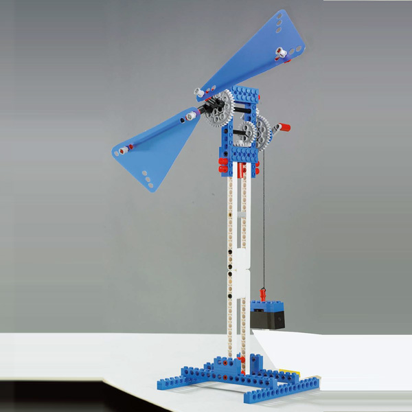

Lego Powered Machines Building Instructions
科學動力
| 級別 | 圖片 | 主題 | YouTube/介紹 | 操作示範 | 搭建教案 | 其它物件 | 比賽及改裝 |
|---|---|---|---|---|---|---|---|
| 模型 |  |
13塔13 | 搭建手冊 | ||||
| 模型 |  |
12梯子26 | 搭建手冊 | ||||
| 模型 |  |
15折疊凳13 | 搭建手冊 | ||||
| A班 | 8攪拌器16 | 攪拌器 | 操作示範 | 搭建手冊 | 攪拌器改裝 | ||
| A班 |  |
4小風帆車28 | 風帆車 | 操作示範 | 搭建手冊 | ||
| A班 |  |
6投石機31 | 投石機 | 操作示範 | 搭建手冊 | ||
| A班 | 18機械手13 | 機械手臂原理 | 操作示範 | 搭建手冊 | |||
| A班 |  |
17回力車23 | 回力車怎麼跑 | 操作示範 | 搭建手冊 | ||
| A班 |  |
24手搖風扇35 | 操作示範 | 搭建手冊 | |||
| A班 |  |
14橡皮筋槍22 | 操作示範 | 搭建手冊 | |||
| A班 |  |
26電動車(電機)18 | 操作示範 | 搭建手冊 | |||
| A班 |  |
23平衡風車(電機)39 | 操作示範 | 搭建手冊 | |||
| B班 |  |
5連弩24 | 諸葛連弩 | 操作示範 | 搭建手冊 | ||
| B班 |  |
38飛輪 | 飛輪 | 搭建手冊 | |||
| B班 |  |
39動力車(電機) | 動力車 | 搭建手冊 | |||
| B班 |  |
28彈力車13 | 操作示範 | 搭建手冊 | 道閘搭建手冊 | ||
| B班 |  |
10戰鬥陀螺20 | 操作示範 | 搭建手冊 | |||
| B班 |  |
33特朗德爾輪 | 特朗德爾輪 | 搭建手冊 | |||
| B班 |  |
34台秤 | 台秤 | 搭建手冊 | |||
| B班 |  |
2重力車31 | 重力車 | 搭建手冊 | |||
| B班 |  | 36風車 | 風車 | 搭建手冊 | |||
| B班 |  |
30魚竿 | 搭建手冊 | ||||
| 難 |  |
57大榔頭 | 大榔頭 | 搭建手冊 | |||
| 1 | 堆高機(電機)48 | 堆高機駕駛技術 | |||||
| 2 | |
重力車(手動)31 | |||||
| 3 | 大風帆車(手動)11 | ||||||
| 4 | 小風帆車(手動)28 | ||||||
| 5 | |
連弩(手動)24 | |||||
| 6 | 投石機(手動)31 | ||||||
| 7 |  |
攪拌機(手動)16 | 攪拌機 | ||||
| 8 | 攪拌器(手動)16 | ||||||
| 9 |  |
投籃機(電機)50 | 籃球發球機 | ||||
| 10 | |
戰鬥陀螺(手動)20 | |||||
| 11 |  |
道閘(手動)11 | 小心道閘 | ||||
| 12 | |
梯子(靜止)26 | |||||
| 13 | |
塔(靜止)13 | |||||
| 14 | |
橡皮筋槍(手動)22 | |||||
| 15 | |
折疊凳(靜止)13 | |||||
| 16 |  |
折疊椅(靜止)23 | |||||
| 17 | |
回力車(手動)23 | |||||
| 18 | 機械手(手動)13 | ||||||
| 19 |  |
戰鬥眼鏡(靜止)28 | 我的戰鬥力是53萬 | ||||
| 20 |  |
重型機車(電機)39 | |||||
| 21 |  |
裝甲車(電機)41 | |||||
| 22 |  |
平衡鳥(手動)37 | 好神奇的平衡鳥 | ||||
| 23 | 平衡風車(電機)39 | ||||||
| 24 | 手搖風扇(手動)35 | ||||||
| 25 |  |
風力車(電機)35 | |||||
| 26 | 電動汽車(電機)18 | ||||||
| 27 |  |
飛輪車(手動)16 | |||||
| 28 | |
彈力車(手動)13 | |||||
| 29 | 清掃車 | ||||||
| 30 | 魚竿 | ||||||
| 31 | 慣性滑行 | ||||||
| 32 | 錘子 | 大榔頭和錘子前半部相同 | |||||
| 33 | 特朗德爾輪 | ||||||
| 34 | 台秤 | ||||||
| 35 | 擺鐘 | ||||||
| 36 | 風車 | ||||||
| 37 | 陸地游艇 | ||||||
| 38 | 飛輪 | ||||||
| 39 | 動力車 | ||||||
| 40 | 高速賽車 | ||||||
| 41 | 機械巨蟲(A)(B) | 博比特蟲 | |||||
| 42 | 機器狗 | SONY-寵物機器狗Aibo | |||||
| 43 | 天平 | ||||||
| 44 | 塔式起重機 | ||||||
| 45 | 滾動與滑動摩擦 | ||||||
| 46 | 變速賽車 | ||||||
| 47 | 齒輪10種結構 | ||||||
| 48 | 槓桿 | ||||||
| 49 | 滑輪 | ||||||
| 50 | 棘爪棘輪 | ||||||
| 51 | 輪軸 | ||||||
| 52 | 螺旋 | ||||||
| 53 | 凸輪 | ||||||
| 54 | 穩定結構 | ||||||
| 55 | 楔形 | ||||||
| 56 | 斜面 | ||||||
| 57 | 大榔頭 | 大榔頭和錘子前半部相同 |